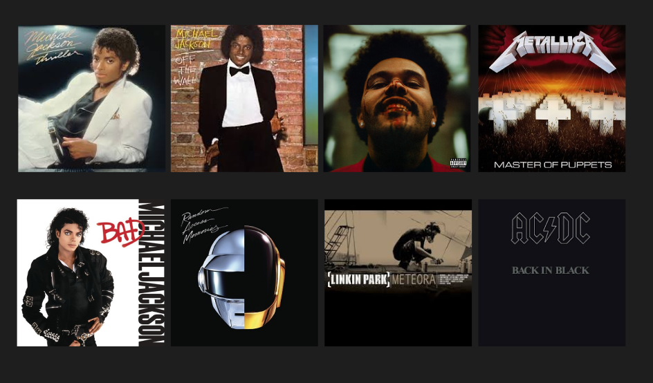

Sobre mim
Olá, eu sou o Lucca, tenho 15 anos, e moro em São Paulo.
Moro com meu pai Paulo e minha mãe Andrea.
Foto Recente

Foto Criança

Interesses
Videogames
Gostos Musicais

Esportes


 Conheça o Pelegrino Adelmo Begliomini
Conheça o Pelegrino Adelmo Begliomini
Lugares que ja fui
Orlando

Mais informações sobre Orlando
Miami

Mais informações sobre Miami
Foz do Iguaçu

Mais informações sobre Foz do Iguaçu
Lugares que gostaria de visitar
Lisboa-Portugal

Mais informações sobre Lisboa
Roma-Itália

Mais informações sobre Roma
Los Angeles-EUA

Mais informações sobre Los Angeles
Las Vegas-EUA

Mais informações sobre Las Vegas
Voltar para a página principal